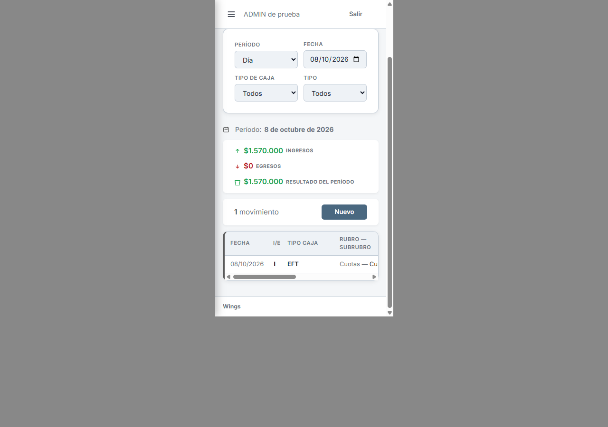
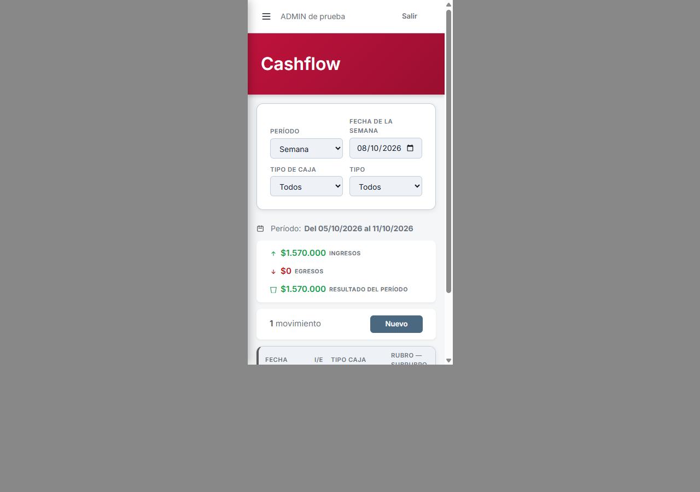
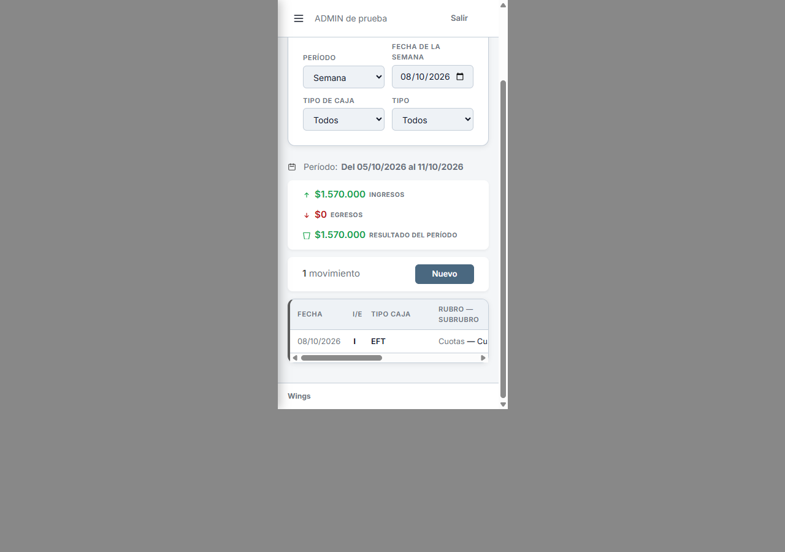
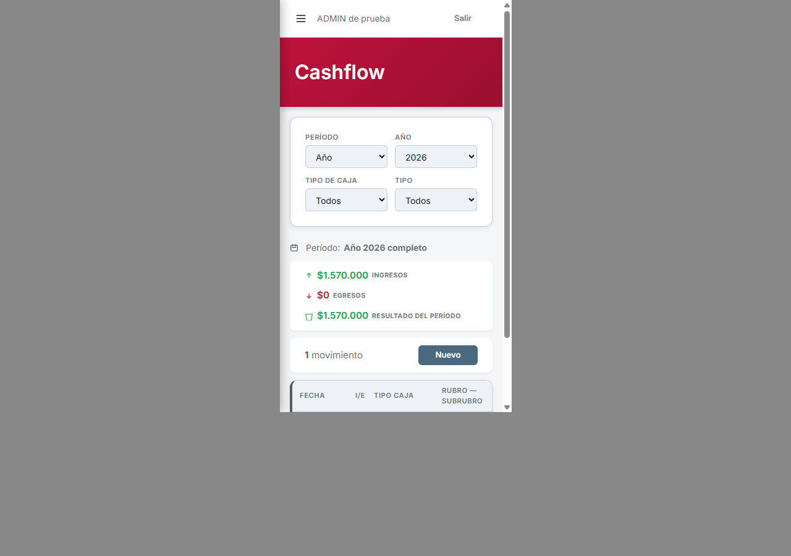
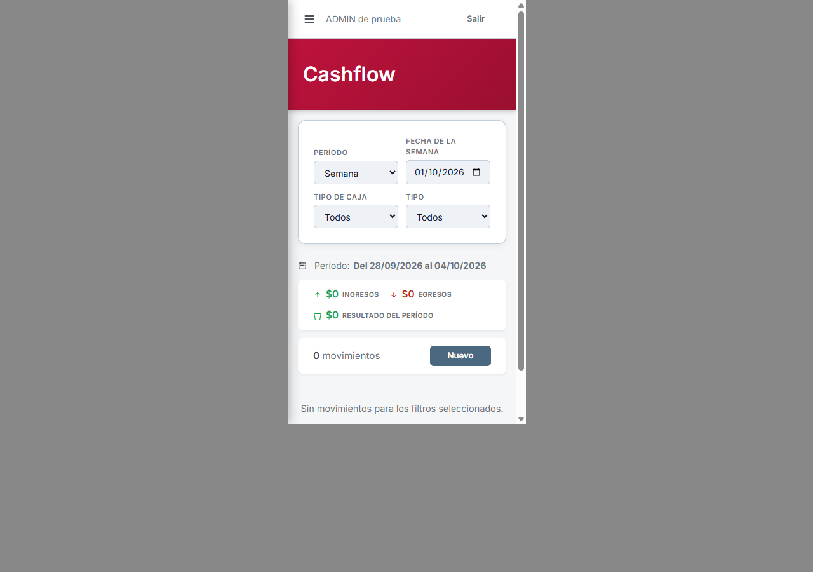
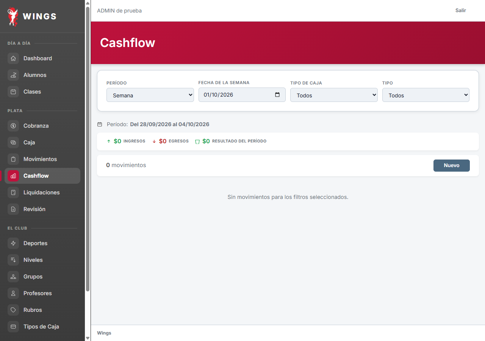

Cashflow · selección de período
Maquetas en celular y escritorio. Elegí un período para verlo.
Día
Elegís una fecha.


Ver escritorio

Semana
Elegís una fecha de esa semana. Se muestran lunes a domingo.


Ver escritorio

Mes
Elegís año y mes.


Ver escritorio

Año
Elegís el año completo.


Ver escritorio

Semana que cruza de mes o de año
Septiembre → octubre

Ver escritorio

Ver escritorio
Diseño aprobado y aplicado localmente. Ver resultado aplicado. El resumen muestra ingresos − egresos como Resultado del período; el saldo acumulado queda pendiente de definición. Capturas de Laravel real con datos ficticios, 08/10/2026.